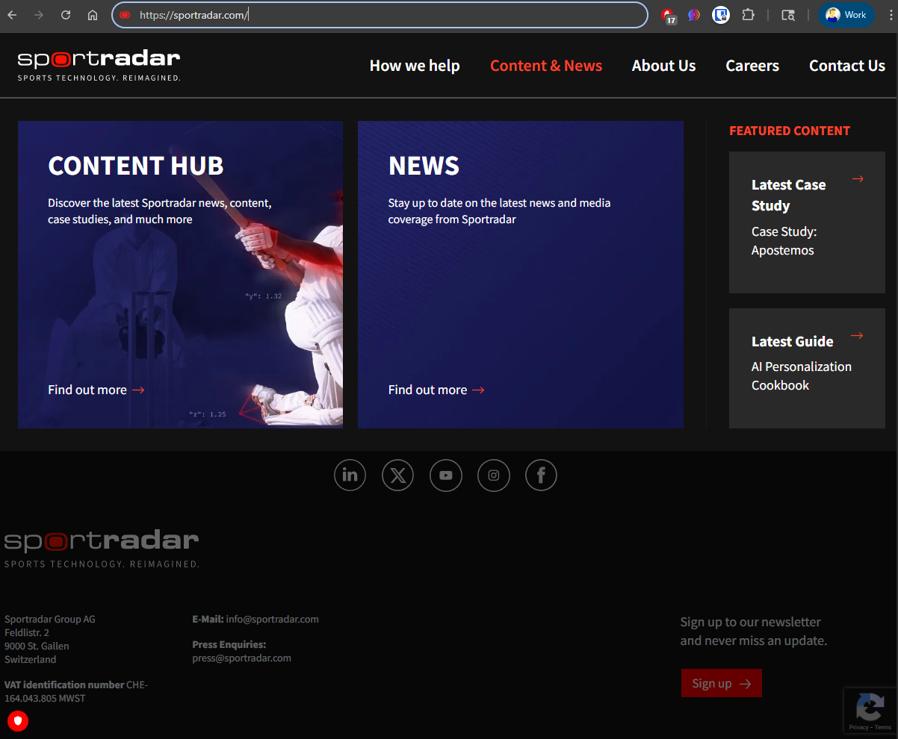

Sportradar already has an Internal Developer Portal. This site explores what happens when you replace rigid templates with flexible blueprints, add scorecard governance, and layer AI agents on top — ahead of the 2026 FIFA World Cup.

What happens when a data pipeline degrades during a live Premier League match — and 800 betting operators are counting on you. With the 2026 FIFA World Cup months away, this isn't hypothetical.
Read the story CompanyThe numbers behind the world's leading sports technology company.
Explore EngineeringInside Sportradar's Sportify model and the platform engineering challenge at scale.
Read more IntegrityHow Sportradar monitors 1M+ events annually for match-fixing — and why the World Cup raises the stakes to existential.
Learn more AnalysisRegulatory exposure, contract risk, and why MTTR is an existential metric in live sports data.
See the impact SolutionThree workflow diagrams showing how incident response transforms — from fragmented firefighting to autonomous resolution.
View the architecture